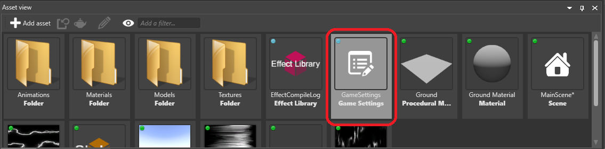
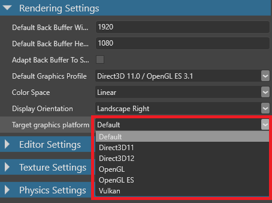
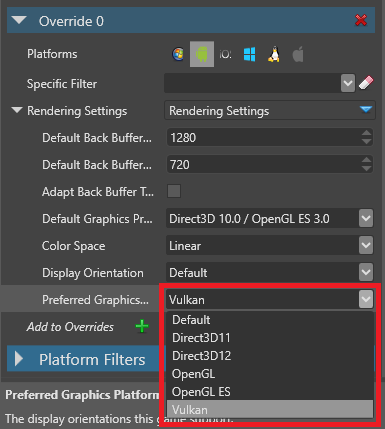
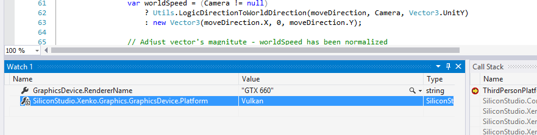

グラフィックス プラットフォームの設定
初級
グラフィックス プラットフォームは、プロジェクトを実行するデバイスのグラフィックスハードウェアをコントロールします。例えば、iOS は OpenGL ES グラフィックスプラットフォームをサポートしていますが、デバイスによってサポートするグラフィックスプラットフォームは異なります。ゲームが使用するグラフィックプラットフォームを選択したり、異なるプラットフォーム（Windows や Android など）用のオーバーライドを追加することができます。
Warning
Direct3D から旧バージョンの Direct3D に移行すると、問題が発生することがあります。例えば、ゲームに HDR テクスチャーが含まれている場合、これは Direct3D 9 ではサポートされていないため、クラッシュしてしまいます。
グラフィックスプラットフォームの設定は、ゲーム設定アセットで行います。
Note
使用するグラフィックスプラットフォームの最新のドライバーがインストールされていることを確認してください。
アセットビューで、Game Settings アセットを選択します。

プロパティグリッドで、[Rendering Settings] > [}}Target graphics platform**] を選択し、使用したいグラフィックスプラットフォームを選択します。

[Default] を選択した場合は、ビルド時に、プラットフォーム（Windows, Android など）に適したグラフィックスプラットフォームが使用されます。
| プラットフォーム | 既定のグラフィックスプラットフォーム |
|---|---|
| Windows, UWP | Direct3D 11 |
| Linux, Mac OS | OpenGL |
| その他 | OpenGL ES |
グラフィックスプラットフォームのオーバーライド
特定のプラットフォームで使用するグラフィックプラットフォームを、オーバーライド（上書き指定）することができます。例えば、Linux では Vulkan を、他のプラットフォームでは既定のものを使うように指定することができます。
Game Settings アセットが選択された状態で、プロパティグリッドで [Overrides] の横にある
 （追加）をクリックします。
（追加）をクリックします。
すると、Game Studio がオーバーライドを追加します。
新しく追加されたオーバーライドの [Platforms] で、このオーバーライドに適用したいプラットフォームを選択します。

Configuration ドロップダウンメニューで、[Rendering Settings] を選択します。

[Rendering Settings] の下の [Preferred Graphics Platform] ドロップダウンメニューで、使用したいグラフィックスプラットフォームを選択します。

Stride は、そのプラットフォーム用のグラフィックスプラットフォームを、選択されたものに上書きします。
プロジェクトで使用しているグラフィックスプラットフォームを確認する
ゲームコード（スクリプト内など）に、ブレークポイントを追加します。
プロジェクトを実行します。
GraphicsDevice.Platform 変数の値を確認します。
例えば、このプロジェクトでは Vulkan が使われていることが分かります。
